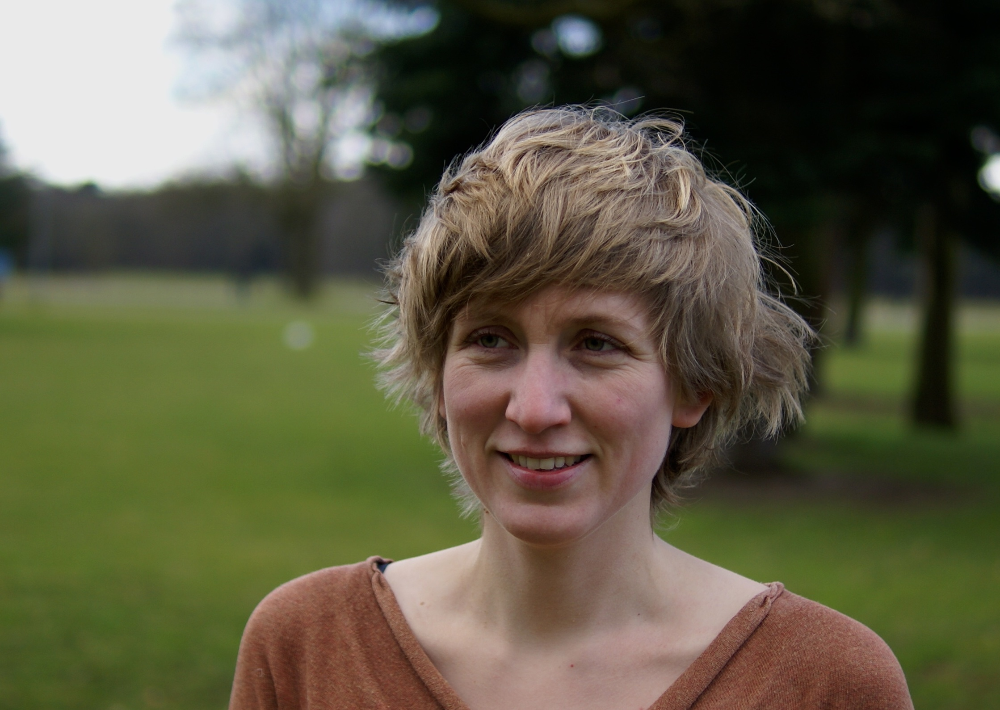
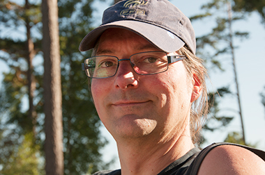
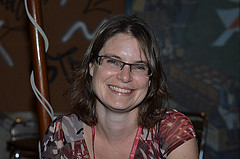
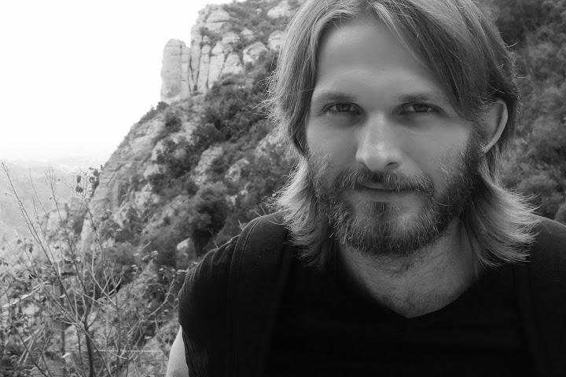
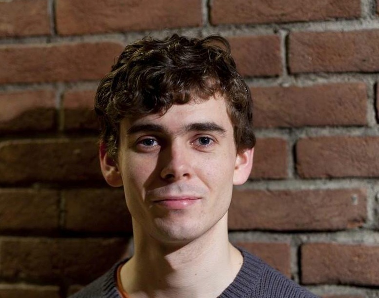
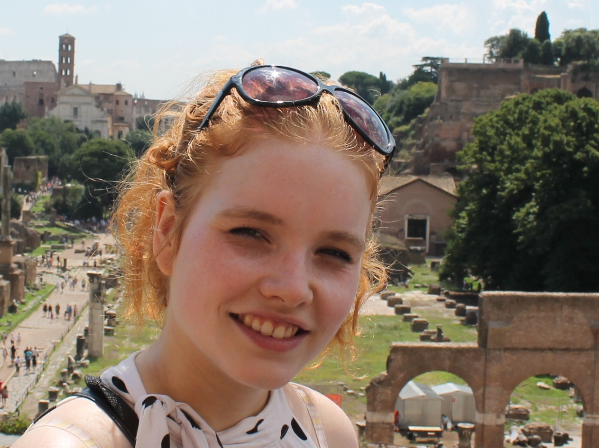
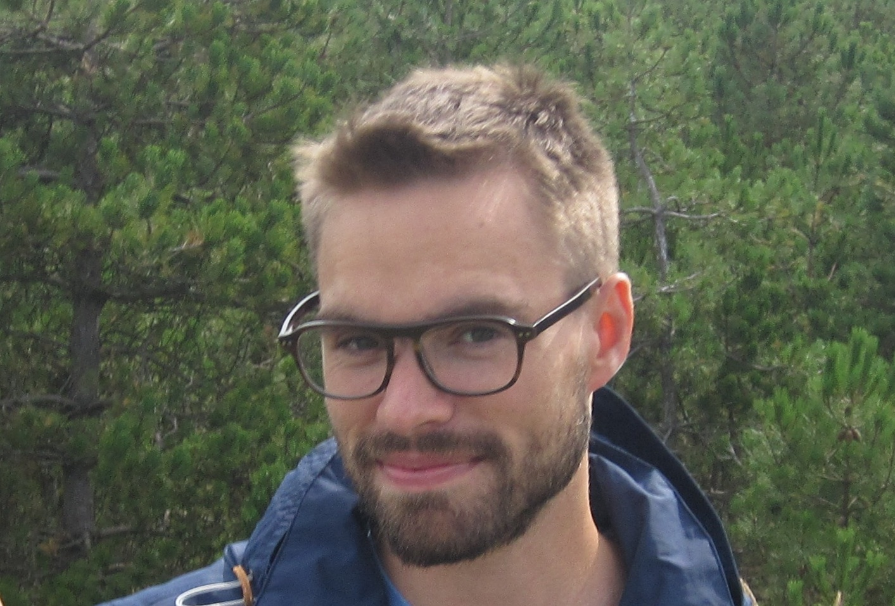

The research group
Corien Bary is a professor of Semantics at the Radboud University Nijmegen and the PI of the Perspective-project. Apart from supervising the project as a whole, she has a special interest in temporal anchoring and (optative) mood.
 Peter Berck is an external PhD candidate putting the finishing touches
on his dissertation on memory based word prediction, and provides
technical support to the project.
Iris Hendrickx a post-doctoral researcher in the field of eHumanities at the Center for Language Studies of the Radboud University. She provides computational support to the project.
 Leopold Hess is a PhD candidate in Philosophy of Language at the Radboud University Nijmegen. Within the Perspective-project he works on the role of subjective, evaluative and indexical expressions in perspective shifts, with a particular focus on Thucydides' historical narrative. His other interests include philosophical questions concerning the nature of meaning and foundations of semantics.
 Per Erik Solberg is a PhD student in linguistics at the University of Oslo. He works on the semantics of perspective-sensitive reflexive pronouns in Latin and cross-linguistically. During the spring of 2016, he will stay in Nijmegen and work with the research group.
 Celine Teeuwen has a BA and MA degree in classics and is now studying for a degree in education. She works as a research assistant in the project.
 Kees Thijs is a PhD-student in the project. His research is about the function of attitudinal particles in Ancient Greek (e.g. μήν, δή) and their role within perspective shifts.